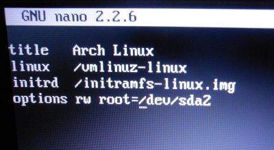
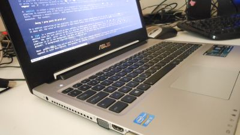

Arch Linux installatie
Robbe Van der Gucht, 24/09/2013
Mijn nieuwe laptop is toegekomen en ik heb er Arch Linux op gezet. Het eerste wat ik gedaan heb is met Clonezilla een clone gemaakt van de huidige HD. Clonezilla is staat ook op de Parted Magic CD samen met een heleboel handige tools zoals GParted.
De fabrieks-partitionering.

Huidige Arch Linux partitionering.

Start op vanaf de Arch Linux boot CD.
loadkeys be-latin1
wifi-menu
# activeer de swap
swapon /dev/sda3
# Voorbereiding base installatie
mount /dev/sda2 /mnt
mkdir /mnt/boot
mount /dev/sda1 /mnt/boot
# Zet favoriete mirror bovenaan
vi /etc/packman.d/mirrorlist
# Installeer base-system
pacstrap -i /mnt base
# Stel fstab in
genfstab -p /mnt >> /mnt/etc/fstab
cat /mnt/etc/fstab # altijd controleren en eventueel handmatig bijwerkenWe zijn bijna klaar om te chrooten. We moeten echter eerst nog onze /sys/firmware/efi/efivars populaten. Requirements for UEFI to work
Hier heb ik wat problemen gehad maar uiteindelijk is het gelukt. De volgende links hebben me wat geholpen. - efivars versus sysfs-efivars - Testing if you are booted into UEFI mode - https://bbs.archlinux.org/viewtopic.php?pid=1314641
repopulate /sys/firmware/efi/efivars
Dit is nodig om binnen de chroot omgeving eraan te kunnen.
umount /sys/firmware/efi/efivars # exit value 127
modprobe -r efivars # exit value 1
modprobe efivarfs
mount -t efivarfs efivarfs /sys/firmware/efi/efivars
arch-chroot /mnt # chrooten naar onze root /dev/sda2 partitie
# verifieer
cat /sys/firmware/efi/efivars
# indien nodig remount
mount -t efivarfs efivarfs /sys/firmware/efi/efivar
# stel hostname in
echo "spinoza" > /mnt/etc/hostname
# localisatie configuratie
nano /etc/locale.gen
locale-gen
echo LANG=en_GB.UTF-8 > /etc/locale.gen
export LANG=en_GB.UTF-8
echo KEYMAP=be-latin1 > /etc/vconsole.conf
ln -s /usr/share/zoneinfo/Europe/Brussels
hwclock --systohc --utc
# zet DHCP aan voor ethernet poort
systemctl enable dhcpcd.service
# Installeer de bootloader
pacman -S gummiboot
gummiboot install
# config bootloader
nano /boot/loader/entries/arch.conf
nano /boot/loader/loader.confInhoud /boot/loader/entries/arch.conf:

# update config
gummiboot update
# Zet root paswoord
passwd
# verlaat de chroot omgeving
exit
# unmount recursief
umount -R /mnt
# zet laptop af.
poweroff # doneDe laptop lijkt goed te draaien. Ik ben de zsh die op blijkbaar de default is op de installatie cd beginnen appreciëren. Ik denk dat ik die in de toekomst nog ga gebruiken.
